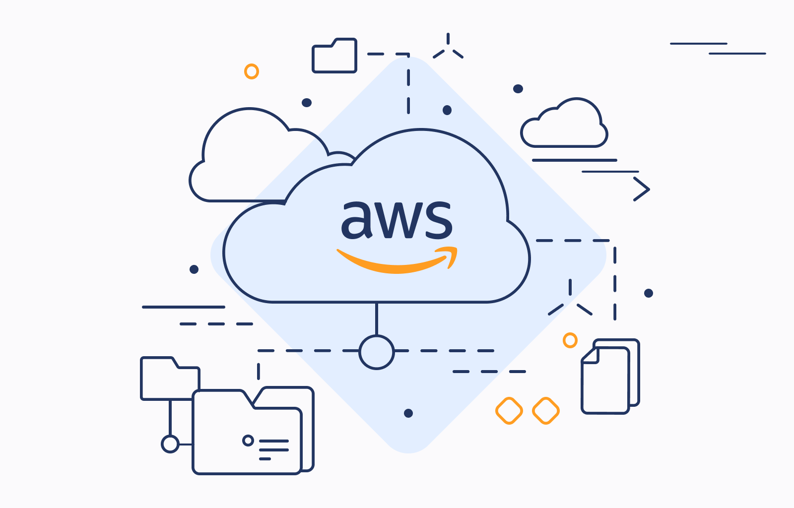

This was my Final Year group Project in University. The objective of the project is to develop a software that can act as a gaming controller
that utilizes hand gesture motion control. This project will investigate existing machine learning based hand gesture recognition algorithms
and improve it to effectively play a computer games such as racing car, card games, or the alike. I worked on the Deep learning model of the Project,
utilising MediaPpipe's hand landmark detection framework, TensorFlow and OpenCV. To process the hand gesture images that I input and extract the hand landmarks,
and train a simple feedforward neural network for classification. Then the pre-trained model is loaded to a controller that recognizes hand gestures via webcam
and maps them to the game controls using pydirectinput library.


The cloud resume challenge is a project that challenged participants to produce a website running on serverless cloud infrastructure
and built using CI/CD pipelines. The website is written in HTML, CSS and continuously deployed to an S3 bucket and cloudfront CDN.
The backend infrastructure is provisioned automatically via a CI/CD pipeline using GitHub Actions, which builds and deploys an AWS SAM application (translated into AWS CloudFormation).
An HTTP API is created using Amazon API Gateway(v2). The API invokes an AWS Lambda function (Python) that atomically increments and reads a counter in Amazon DynamoDB,
returning the latest visitor count to be displayed on the website.


This project is about incorperating Ai and Network camera Surveillance for my home. Using Tapo C200c IP camera that supports Wi-Fi connectivity for cloud integration
via Real-Time Streaming Protocol(RTSP) and Raspberry Pi 5 to discover and record camera feed. RTSP is a network protocol used to actually transmit and
control live video and audio streams over IP networks. Instead of subscribing to Tapo Care Cloud, I dedicated a hardisk to store my recordings within my home network.
Hence, I do not need to pay monthly for cloud storage and my recordings are safely kept within my private network.
Raspberry Pi 5 is an absolute powerhouse for a home server, thanks to its upgraded quad-core processor and dedicated PCIe interface. Unlike its predecessors,
it easily handles high-throughput storage, virtualization, and lightweight AI tasks. Which is perfect for me to run Frigate, an open source Network Video Recorder(NVR)
that uses local artificial intelligence to process security camera feeds in real time.
Since all processing is performed locally on my Pi 5, and my camera feeds never leaves my home. Running Frigate NVR inside Docker,
it handles video storage and smart motion detection perfectly! I can stream my live recording onto a local browser from anywhere in the world by connecting
to my Pi 5, via Raspberry Pi connect. Thus, this project is not just a privacy focused Ai Surveillance System, it is also a home server
capable of further more!